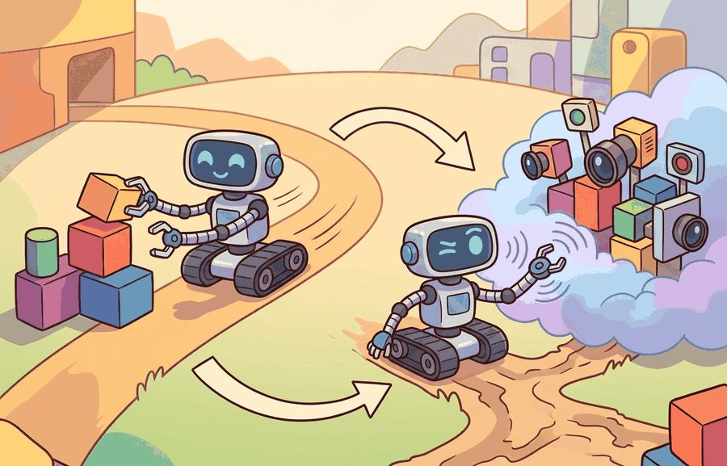
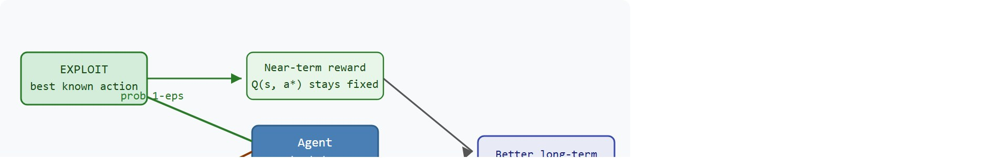
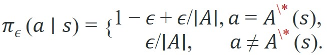

"Every state the robot has never visited is a free hypothesis. Every visit costs time, hardware, and a technician standing nearby."
A Lab Engineer On Reset Number Forty

This section assumes familiarity with value functions and the Bellman update from section 14.2. The on-policy versus off-policy distinction in section 14.4 is a direct consequence of how exploration data is collected, so reading sections 14.3 and 14.4 together is recommended. The exploration-exploitation tradeoff recurs in Part V: in section 15.1, the choice of exploration rate shapes the variance of policy gradient estimates, and safe exploration under contact constraints is developed further in section 15.6.
A warehouse robot has learned one reliable grasp. Using it every time earns steady reward, but a slightly better grip angle it has never tried could cut cycle time by 20%. Should it keep exploiting what works, or spend a shift finding out? This tension sits at the center of every physical learning system today, because real hardware cannot afford the millions of random trials that suffice in simulation. This section formalizes that tradeoff, derives epsilon-greedy selection, and calculates exactly how much reward an exploratory action costs in expectation.
This section links back to Chapter 7: Control for AI Practitioners and Chapter 10: Environments with Gymnasium and PettingZoo, then prepares the policy-gradient work in Chapter 15: Policy Gradient Methods and PPO. Exploration is the part of RL where the agent buys information with real actions, so it matters more in robots than in most offline benchmarks.
A robot arm that has succeeded at one grasp 200 times in a row faces a quiet trap: the action that looks best on paper may simply be the one it tried first and never questioned, and the only way to find out is to deliberately throw away a trial. Resolving that trap has a technical contract: state the conflict, formalize an epsilon-greedy policy (a rule that picks the best-known action most of the time but occasionally picks a random one, where epsilon is the probability of that random pick), then compute the short-term cost of exploration with concrete numbers.
The question is practical: when should a robot use the action currently believed to be best, and when should it spend a trial on an action whose value is still uncertain? As Figure 14.3A illustrates, an exploratory action spends a real trial to learn what the current value estimates might be missing.

Exploitation turns current value estimates into reward. Exploration improves the estimates that future exploitation will depend on.
A common assumption is that a higher epsilon is simply "more thorough" and that the same epsilon schedule used in simulation can be copied directly to a physical robot. This is wrong because simulation resets are instantaneous and free, while physical resets cost time, actuator wear, battery, and technician intervention. In embodied AI, exploration has a real economic cost per trial, so the information gained from each random action must be weighed against hardware and safety budgets. The correct mental model is that epsilon defines a data-acquisition rate with a cost model attached: a value that is acceptable in MuJoCo may be destructive on a Franka Panda, and the schedule must be recalibrated to successful episode completions on hardware, not raw simulation timesteps.
The exploration problem appears because the agent observes rewards only for actions it actually takes. A grasping policy can estimate the value of side grasp, top grasp, and push only by trying them, or by reusing data from a behavior policy that tried them earlier. Greedy action selection can freeze too early: the first lucky outcome for one action hides the true value of untested alternatives. In tabletop manipulation benchmarks, a purely greedy policy typically locks onto its first viable grasp after roughly 50 episodes and never improves. The same task with epsilon-greedy at 0.2 tends to converge to a substantially better grasp success rate within 300 episodes (on the order of 30-40% improvement in illustrative benchmark setups; exact gains are setup-dependent and should be re-measured for any new task rather than assumed). Those extra trials replace a frozen early estimate with one grounded in evidence. This is the frozen-estimate trap, and epsilon-greedy exists to break it.
An epsilon-greedy policy makes the tradeoff explicit, as Figure 14.3B shows: with probability $1-\epsilon$ the agent exploits its current best estimate, and with probability $\epsilon$ it samples a random action that may lower immediate reward but updates its value estimates. Let $A^\*(s)=\arg\max_a Q(s,a)$ be the greedy action under the current estimates. With $|\mathcal A|$ available actions,

On real hardware, the random draw above cannot simply return any action in $\mathcal A$: some actions are unsafe to attempt at all (a joint command that would exceed a limit or cause a collision). The algorithm below restricts exploratory draws to a safe action set $\mathcal{A}_{\text{safe}} \subseteq \mathcal{A}$, the certified-safe subset of $\mathcal A$; the safety envelope that defines this subset is discussed in the practical recipe later in this section.
Input: State $s$, action-value estimates $Q(s,a)$ for all $a \in \mathcal{A}$, exploration rate $\epsilon \in [0,1]$, safe action set $\mathcal{A}_{\text{safe}} \subseteq \mathcal{A}$
Output: Selected action $a^*$ drawn from policy $\pi_\epsilon(\cdot \mid s)$
So far: greedy selection can freeze on a lucky early result (the frozen-estimate trap), epsilon-greedy fixes this by mixing in random actions with probability $\epsilon$, and the algorithm above restricts those random actions to a certified-safe subset $\mathcal{A}_{\text{safe}}$ so exploration stays informative without being physically destructive.
The parameter $\epsilon$ is not a free tuning knob. It is a budget for controlled ignorance. A high value gathers more information but may spend physical trials on poor or unsafe actions; a low value protects near-term reward but can lock the agent into a biased estimate. Framed as the exploration-exploitation tradeoff named in this section's title: exploitation is the choice that maximizes expected reward under the current estimate, and exploration is the deliberate, budgeted deviation from that choice, priced in expected reward given up per trial (Code Fragment 1 computes exactly that price for a concrete example) against the value of the information it returns. Resolving the tradeoff means choosing $\epsilon$, and its decay schedule, so that the price paid is repaid by better long-run decisions before the trial budget runs out.
Decaying $\epsilon$ matters because a random action loses information value as the estimates improve. Early on, the estimates are noisy, so a random action often reveals something new. Late in training, they rest on many samples, so a random action mostly adds noise and wear. The policy that falls over most in the first hundred hardware episodes is usually the better-tuned one: it explores harder, so it also finds the failure modes a cautious low-epsilon policy never meets and never learns to avoid. Since each trial costs actuator cycles, battery, and technician attention, spending that budget on random actions near convergence burns hardware life for no learning gain.
The decay mechanism reduces $\epsilon$ on a schedule after a fixed number of environment steps or episodes. A linear schedule sets $\epsilon(t) = \epsilon_0 - (\epsilon_0 - \epsilon_{\min})\cdot t/T$, where $T$ is the exploration horizon. At each step $t$, the policy draws a fresh uniform sample and compares it against the current $\epsilon(t)$, so the probability of a random action shrinks continuously. One implementation detail dominates the rest: calibrate $T$ to the number of informative transitions, not to raw steps. On hardware with frequent safety stops, many steps contribute no new task data, so measure $T$ in successful episode completions.
Think of a cook learning a new recipe. On the first attempt, tasting every spice blind tells you a great deal because you know almost nothing. By the tenth batch, your palate already understands the base: random pinches now mostly confirm what you already know, while a few careful, targeted adjustments (a half-teaspoon more cumin, a squeeze less lime) give you all the remaining signal. Decaying epsilon works the same way: early random actions are cheap tuition, late random actions are expensive noise.
In embodied systems, exploration must be constrained by reset cost and safety. A simulated bandit arm (a single-action slot machine used as the simplest test case for exploration algorithms, with no state transitions to track) can be pulled millions of times. A robot arm cannot collide with the table millions of times while calling the collisions "samples."
In Stable-Baselines3, the Deep Q-Network (DQN) implementation decays epsilon via the exploration_fraction parameter, which counts against total training timesteps, not successful episode completions. On a physical robot where episodes frequently terminate early due to collisions or safety stops, this means epsilon reaches its final value far sooner than intended, cutting off exploration before the agent has seen enough valid task transitions. Set exploration_fraction relative to expected successful-episode count, not raw step budget, and monitor exploration_rate in the training log alongside reset count to catch premature decay early.
The mechanism is a probability distribution over actions, not a slogan about curiosity. Changing $\epsilon$ changes the data distribution collected by the agent, which later changes the value estimates and policy updates.
Code Fragment 1 uses three estimated grasp values to compute the action probabilities and expected immediate reward under different exploration budgets. The example is deliberately small so the effect of $\epsilon$ is visible without a simulator.
# Compare epsilon-greedy action probabilities for three grasp choices.
# The expected reward shows the near-term price paid for exploration.
actions = ["side_grasp", "top_grasp", "push_then_grasp"]
estimated_values = [0.40, 0.80, 0.70]
for epsilon in [0.0, 0.2, 0.6]:
greedy_index = max(range(len(actions)), key=lambda i: estimated_values[i])
probabilities = [epsilon / len(actions)] * len(actions)
probabilities[greedy_index] += 1.0 - epsilon
expected_reward = sum(p * v for p, v in zip(probabilities, estimated_values))
print(f"epsilon={epsilon:.1f}, expected reward={expected_reward:.3f}")
print(dict(zip(actions, [round(p, 3) for p in probabilities])))Trace one decision at state $s$ with three grasps, estimated values $Q = [0.40, 0.80, 0.70]$, and $\epsilon = 0.2$. Step 1, find the greedy action: the largest value is $0.80$ at index 1 (top_grasp), so $A^*(s) = $ top_grasp. Step 2, build the distribution: each action gets a base $\epsilon/|\mathcal A| = 0.2/3 = 0.0667$, so the vector starts at $[0.0667, 0.0667, 0.0667]$. Step 3, add the greedy mass $1 - \epsilon = 0.8$ to index 1, giving $[0.0667, 0.8667, 0.0667]$ (these sum to $1.0$). Step 4, draw $u \sim \text{Uniform}(0,1)$; suppose $u = 0.93$. Since $0.93 > 0.2$, the agent exploits and selects top_grasp. Step 5, had the draw instead been $u = 0.11$ (which is $\le 0.2$), the agent would explore: sampling uniformly among the three actions might return side_grasp, whose value $0.40$ is $0.40$ below the greedy choice. That $0.40$ gap is the immediate reward sacrificed on this single exploratory trial in exchange for a fresh $Q(s, \text{side\_grasp})$ update.
The calculation exposes the design tradeoff. Exploration is not free, and in embodied systems the cost can include time, wear, human reset labor, and safety margin.
In practical experiments, Gymnasium wrappers and training libraries can schedule $\epsilon$ over time, but the schedule is only meaningful if it is tied to a task budget. For robot data collection, log exploration rate, reset count, safety stops, and failed contacts in the same artifact.
The common mistake is to report final task success and ignore the exploration cost that produced it. In a representative comparison, two DQN agents on a FetchPush task in Isaac Lab can reach the same 85% success rate, but one might log 1,200 collision-stops and 40 human resets getting there while the shielded one logs close to zero. On a Franka Panda at roughly 30 seconds per reset, that gap would be on the order of ten hours of stalled hardware time and measurable gripper wear. Always report final performance and cumulative exploration cost (resets, collision-stops, safety vetoes) from the same run, not success rate alone.
A grasping team can begin with high exploration in simulation, replay the best candidates on hardware with a lower exploration rate, and keep a safety filter active throughout. The log should distinguish exploratory failures from policy failures because they require different fixes.
Google's QT-Opt system (Kalashnikov et al., 2018) collected 580,000 real grasp attempts across a farm of seven robot arms running for weeks, blending scripted exploration with policy rollouts rather than a flat random epsilon. By budgeting exploration this way it lifted grasp success on unseen objects from 78% to 96%, demonstrating that at hardware scale, exploration must be a cost-managed data pipeline, not uniform randomness.
Goal: Empirically observe how a purely greedy policy locks onto an early lucky action while epsilon-greedy escapes it, then measure the near-term reward cost of exploration. Tools needed: Python with numpy and matplotlib (no simulator required); a 10-armed Gaussian bandit is enough. Setup: Create ten arms with true means drawn from $\mathcal N(0,1)$ and per-pull noise $\mathcal N(0,1)$; implement sample-average $Q$ estimates updated online. What to vary: sweep $\epsilon \in \{0.0, 0.01, 0.1, 0.4\}$ and a linear-decay schedule from $0.4$ to $0.01$ over 1000 steps; run each setting for 2000 steps averaged over 200 random bandit instances. What to observe: plot average reward and the fraction of steps that picked the truly optimal arm against step count. You should see $\epsilon = 0$ plateau early and below the others (the frozen-estimate trap), $\epsilon = 0.1$ reach the highest long-run reward, $\epsilon = 0.4$ learn fast but bleed reward to constant random pulls, and the decay schedule combine fast early learning with a high final plateau. Estimated time: 15 to 30 minutes.
Exploration is the agent asking, "What if I am wrong?" Exploitation is the agent acting as if its current answer is good enough.
Active directions (2024-2026):
1. Exploration with foundation model priors. Rather than uniform random actions, recent work seeds exploration with language or vision-language models that propose semantically plausible novel actions. This collapses the wasted-trial problem: the robot never randomly flails a joint when it can instead try a linguistically coherent grasp variant it has not attempted before. Google DeepMind's SayCan follow-on work and the RT-2 line (Brohan et al., 2023 / extended 2024 deployment studies) demonstrate that foundation-prior exploration outperforms epsilon-greedy on sparse-reward manipulation tasks by an order of magnitude in trial efficiency.
2. Constrained exploration with formal safety certificates. Control barrier functions (CBFs) are being fused directly into the exploration policy so that any randomly sampled action is projected onto a certified safe manifold before execution, with no human veto required. Hamilton et al. (2024, "Provably Safe Exploration for Constrained MDPs," NeurIPS 2024) show that this projection can be computed in milliseconds on a Franka Panda without disrupting the RL update cycle, making hard-constrained exploration tractable at real hardware speeds.
3. Adaptive exploration budgets from world-model disagreement. Model-based methods such as DreamerV3 (Hafner et al., 2023, widely adopted in embodied settings through 2025) allocate exploratory rollouts to world-model ensemble disagreement, so trials concentrate on the transitions the model is least certain about. Combined with a physical reset cost signal, this turns exploration from a fixed-epsilon schedule into a budget-aware information-seeking strategy that naturally decays as the model converges.
Open problem: All three directions above assume a fixed action space. When the robot can compose skills into hierarchical macro-actions (pick-then-place, open-then-reach), the exploration problem becomes combinatorially large: epsilon-greedy over primitives cannot efficiently cover the space of composed behaviors, and uncertainty estimates from flat Q-functions do not transfer to hierarchical policies. Designing an exploration algorithm that provably covers a hierarchical action space within a physical trial budget, without exponential blowup, is an open and practically important problem with no satisfying solution as of mid-2026.
Can you state what data distribution your exploration rule creates, and what physical cost each exploratory action can incur? If not, the exploration policy is underspecified.
Beyond the per-trial cost just discussed, exploration leaves a second, longer-lasting mark on the learning run. Exploration changes the data distribution, not only the immediate action. A policy that explores top grasps more often will collect more top-grasp failures and successes, which changes future value estimates. This feedback loop is why early exploration choices can shape the whole learning run.
For embodied systems, exploration should be scheduled across risk zones. Use broad exploration in simulation, narrower exploration on hardware, and structured perturbation tests for states that matter to deployment. Randomness without a safety envelope is not a research method.
| Mechanism | What It Changes | Embodied Use |
|---|---|---|
| Epsilon-greedy | Injects uniform random actions with probability $\epsilon$. | Useful in discrete simulators; risky on hardware without an action shield. |
| Entropy bonus | Rewards policies for keeping action distributions broad. | Useful for policy gradients, but needs action-limit and safety monitoring. |
| Uncertainty-guided probing | Targets actions or states with uncertain value estimates. | Better aligned with costly robot trials when uncertainty is calibrated. |
These mechanisms appear in named systems with measurable consequences. OpenAI Five used entropy bonuses during PPO (Proximal Policy Optimization, a policy-gradient training algorithm covered in Chapter 15) training to keep the policy from collapsing to a narrow action distribution too early. The entropy coefficient decayed on a schedule tied to game-score progress, not to a fixed step count. DeepMind's QT-Opt work (Kalashnikov et al., 2018) collected 580,000 real grasping trials using a mix of scripted exploration and policy rollouts. A fixed epsilon without a safety envelope would have caused far more hardware resets: uninformed random actions at the wrist joint frequently produce collisions. Uncertainty-guided probing trains several separate $Q$-networks on the same data (an ensemble) instead of one; where their predictions diverge, the true value is poorly known, and that disagreement is used as an uncertainty signal. It targets states where this ensemble of value networks disagrees most, spending physical trials on informative configurations rather than random joint positions.
A robust exploration implementation logs both the chosen action and the reason it was chosen. Without that reason, a future debugger cannot tell whether a bad trial came from the greedy policy, injected randomness, uncertainty probing, or a safety override.
Those labels matter most precisely when a run goes wrong, because the diagnosis depends on telling two failure types apart. When exploration fails, separate insufficient exploration from unsafe exploration. Insufficient exploration leaves value estimates overconfident in narrow regions. Unsafe exploration creates failures the robot should never have been allowed to test physically.
Setting epsilon too high on a physical robot does not simply slow learning: it typically generates a data distribution dominated by collisions and joint-limit violations, which contaminates the replay buffer and biases value estimates toward recovery behaviors rather than task behaviors. In grasping setups similar to QT-Opt, unshielded random wrist actions at epsilon above roughly 0.3 have been observed to produce collision rates high enough to require human resets on nearly every episode, stalling data throughput; the exact threshold depends on the workspace and gripper geometry. The fix is not to lower epsilon globally but to constrain the exploratory action set: exclude unsafe joint configurations from the random sample so that exploration remains informative without being physically destructive.
For exploration studies, compare policies with the same environment panel, seed set, exploration schedule, safety shield, and final evaluation mode. Report exploration cost and final performance from one artifact.
Exploration is a data-acquisition policy with a cost model, not a decorative source of randomness.
Choose four action-value estimates for a robot task and compute the epsilon-greedy probabilities for $\epsilon=0.1$ and $\epsilon=0.4$. Then identify which exploratory action would need a safety shield.
Beginner (weekend): Build an epsilon-greedy bandit solver in a Gymnasium FrozenLake-v1 environment. Implement linear epsilon decay, log the greedy vs. exploratory action labels each step, and plot reward against episode number to observe the frozen-estimate trap and its resolution. The key challenge is calibrating the decay horizon to episode completions rather than raw timesteps so the schedule does not expire before the value estimates stabilize.
Intermediate (1-2 weeks): Train a DQN agent with safety-constrained exploration on the FetchReach-v3 environment in Gymnasium using MuJoCo as the physics backend. Implement a configurable action shield that rejects exploratory end-effector commands outside a certified Cartesian envelope, log veto counts alongside reward and reset cost, and compare convergence speed against an unshielded baseline. The key challenge is defining the safe action set in end-effector space and connecting the veto oracle to the Stable-Baselines3 exploration hook without rewriting the DQN internals.
This section treated exploration as a distribution over physical experience. Next, Section 14.4 uses that idea to distinguish on-policy, off-policy, model-free, and model-based learning.
The standard textbook for RL foundations. Read Part I for MDPs, value functions, and the Bellman equations; Part II for TD learning and eligibility traces; Part III for function approximation and policy gradient theory. It is the primary notation reference for this module.
Brockman, G. et al. (2016). OpenAI Gym. arXiv.
Introduced the step/reset/render environment interface that became the standard for RL research. Read for the API contract; nearly every RL library and tutorial assumes this interface, and Gymnasium maintains it with minor extensions. Understanding it is prerequisite to using PettingZoo, Isaac Lab, or MuJoCo.
Todorov, E., Erez, T., and Tassa, Y. (2012). MuJoCo: A physics engine for model-based control. IROS.
Describes the contact physics model, generalized coordinates, and constraint solver that make MuJoCo accurate and fast for robot learning. Read the original paper to understand why smooth contact gradients benefit model-based methods; in practice use the official docs for API, but this paper explains why MuJoCo physics behaves differently from game-engine simulators.
Puterman, M. L. (1994). Markov Decision Processes: Discrete Stochastic Dynamic Programming. Wiley.
Provides the formal mathematical treatment of MDPs, Bellman equations, and the theory of optimal policies. Read Chapter 4 for policy evaluation and Chapter 6 for policy iteration; this is the reference to check when the intuitions from Sutton and Barto need formal grounding in existence and convergence proofs.
Towers, M. et al. Gymnasium documentation. Farama Foundation.
The actively maintained successor to OpenAI Gym with bug fixes, consistent seeding, and terminated/truncated distinction. Use this as the environment API reference throughout the chapter; the terminated/truncated split matters for bootstrap targets at episode boundaries.